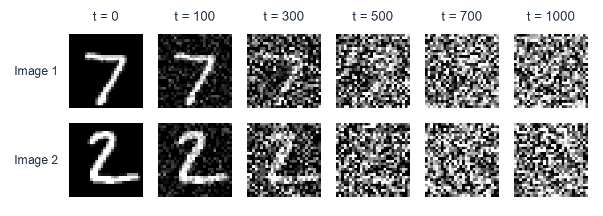
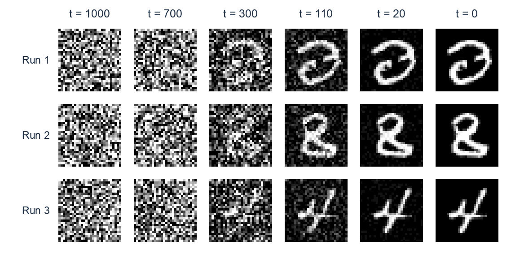

Lecture 11: Unsupervised Learning III — Diffusion Models
Summary of Key Ideas
In Lecture 10, we used a latent-variable model to generate images. We sampled a code from a Gaussian prior, then used a decoder to produce an image. An encoder helped us train the model by approximating the posterior over codes.
Now suppose we generate an image through several intermediate codes. Each step produces a little more structure, until the final step produces the image. This gives a hierarchical latent-variable model. We can train it with a learned approximate posterior, as in a hierarchical VAE, or choose a fixed approximate posterior that makes the calculations easier.
A denoising diffusion probabilistic model (DDPM) takes the second approach. Its fixed forward process gradually adds Gaussian noise to training images. We learn a reverse process that generates images by starting from Gaussian noise and taking many small steps towards the data.
The ELBO connects this construction to a simple training task: predict the noise added to an image. We will derive this loss, explain how to train with one randomly chosen noise level per image, and then use the trained network repeatedly to generate new images.
Learning Objectives
By the end of this lesson, you should be able to:
- Describe a hierarchical latent-variable model and how to sample from it.
- Compare a learned hierarchical approximate posterior with the fixed forward process in DDPM.
- Derive the two forms of the diffusion ELBO and explain why the second is convenient for training.
- Calculate the distribution of a noisy image at any level without sampling the whole forward chain.
- Derive the Gaussian target for a reverse step and its KL to the model distribution.
- Explain how matching the Gaussian means becomes a weighted noise-prediction loss, and how the simple loss changes these weights.
- Describe one training update and the complete generation procedure.
- Explain prompt conditioning and the relationship between noise, clean-image and score predictions.
Hierarchical Latent-Variable Models
Generating Through Several Codes
When we draw, we might begin with an overall shape and add details later. A hierarchy of codes gives a generative model several stages in which to build an image.
For two levels, we sample
\[\mathbf{z}_2\sim p(\mathbf{z}_2), \qquad \mathbf{z}_1\sim p_{\theta}(\mathbf{z}_1\mid\mathbf{z}_2), \qquad \mathbf{x}_0\sim p_{\theta}(\mathbf{x}_0\mid\mathbf{z}_1).\]
The subscript 0 identifies the observed image. The joint distribution is
\[p_{\theta}(\mathbf{x}_0,\mathbf{z}_1,\mathbf{z}_2) =p(\mathbf{z}_2) p_{\theta}(\mathbf{z}_1\mid\mathbf{z}_2) p_{\theta}(\mathbf{x}_0\mid\mathbf{z}_1).\]
This is a Markov chain: once \mathbf{z}_1 is given, the distribution of \mathbf{x}_0 does not depend on \mathbf{z}_2. Each transition can be a Gaussian whose mean is computed by a neural network. For example,
\[p_{\theta}(\mathbf{z}_1\mid\mathbf{z}_2) =\mathcal{N}\big(\mathbf{z}_1;g_{\theta}(\mathbf{z}_2),\tau^2\mathbf{I}\big).\]
We run the network to calculate the mean, then sample \mathbf{z}_1 around it. The latent codes are random variables; the network's hidden layers perform the calculations that determine their distributions.
A Hierarchy of T Levels
For T levels, let \mathbf{z}_{1:T} collect all the codes. The model becomes
\[\boxed{ \begin{aligned} p_{\theta}(\mathbf{x}_0,\mathbf{z}_{1:T}) &=p(\mathbf{z}_T) \left[\prod_{t=2}^{T}p_{\theta}(\mathbf{z}_{t-1}\mid\mathbf{z}_t)\right] p_{\theta}(\mathbf{x}_0\mid\mathbf{z}_1),\\ p(\mathbf{z}_T)&=\mathcal{N}(\mathbf{0},\mathbf{I}). \end{aligned} }\]
Generation proceeds from level T down to the image at level 0. Following the slides, we use \mathbf{z}_t for latent codes and \mathbf{x}_0 for the image. Diffusion papers often call the latent codes \mathbf{x}_t.
Our training data contain only images. Maximum likelihood would maximise \sum_n\log p_{\theta}(\mathbf{x}_0^{(n)}), where
\[p_{\theta}(\mathbf{x}_0) =\int p_{\theta}(\mathbf{x}_0,\mathbf{z}_{1:T})\,d\mathbf{z}_{1:T}.\]
Integrating over all the codes is difficult for neural transitions, so we use the ELBO from Lecture 10, treating the whole collection of codes as one latent vector:
\[\begin{aligned} \mathcal{L}(\theta,q;\mathbf{x}_0) ={}&\mathbb{E}_q[\log p_{\theta}(\mathbf{x}_0\mid\mathbf{z}_1)]\\ &-D_{\mathrm{KL}}\big[q(\mathbf{z}_{1:T}\mid\mathbf{x}_0) \|p_{\theta}(\mathbf{z}_{1:T})\big]. \end{aligned}\]
Here the prior over the whole hierarchy is p_{\theta}(\mathbf{z}_{1:T})=p(\mathbf{z}_T)\prod_{t=2}^{T}p_{\theta}(\mathbf{z}_{t-1}\mid\mathbf{z}_t). It includes the learned transitions between codes. The ELBO satisfies \mathcal{L}(\theta,q;\mathbf{x}_0)\leq\log p_{\theta}(\mathbf{x}_0), and we train by maximising this bound. We will compare two choices for q.
Attempt 1: A Hierarchical VAE
Learning a Gaussian at Each Level
Our first choice uses inference networks with weights \phi:
\[q_{\phi}(\mathbf{z}_{1:T}\mid\mathbf{x}_0) =q_{\phi}(\mathbf{z}_T\mid\mathbf{x}_0) \prod_{t=2}^{T}q_{\phi}(\mathbf{z}_{t-1}\mid\mathbf{z}_t,\mathbf{x}_0).\]
We first infer the top code from the image, then work down the hierarchy. At each lower level, the inference network uses both the code above it and the observed image to predict a Gaussian:
\[q_{\phi}(\mathbf{z}_{t-1}\mid\mathbf{z}_t,\mathbf{x}_0) =\mathcal{N}\big( \boldsymbol{\mu}_{\phi,t}, \operatorname{diag}(\boldsymbol{\sigma}_{\phi,t}^{2}) \big).\]
Both parameter vectors are functions of (\mathbf{z}_t,\mathbf{x}_0). The top-level distribution is also a learned diagonal Gaussian. This construction gives a hierarchical variational autoencoder (HVAE).
Expanding the ELBO
The factorisations of q_{\phi} and p_{\theta} give
\[\begin{aligned} \log\frac{q_{\phi}(\mathbf{z}_{1:T}\mid\mathbf{x}_0)} {p_{\theta}(\mathbf{z}_{1:T})} ={}&\log\frac{q_{\phi}(\mathbf{z}_T\mid\mathbf{x}_0)}{p(\mathbf{z}_T)}\\ &+\sum_{t=2}^{T} \log\frac{q_{\phi}(\mathbf{z}_{t-1}\mid\mathbf{z}_t,\mathbf{x}_0)} {p_{\theta}(\mathbf{z}_{t-1}\mid\mathbf{z}_t)}. \end{aligned}\]
Take the expectation under q_{\phi}. The first term gives a KL over \mathbf{z}_T. For each term in the sum, we first average over \mathbf{z}_{t-1} with \mathbf{z}_t held fixed, giving a conditional KL, then average over \mathbf{z}_t. Substituting into the ELBO gives
\[\boxed{ \begin{aligned} \mathcal{L}_{\mathrm{HVAE}} ={}&\mathbb{E}_{q_{\phi}}[\log p_{\theta}(\mathbf{x}_0\mid\mathbf{z}_1)]\\ &-D_{\mathrm{KL}}[q_{\phi}(\mathbf{z}_T\mid\mathbf{x}_0)\|p(\mathbf{z}_T)]\\ &-\sum_{t=2}^{T}\mathbb{E}_{q_{\phi}(\mathbf{z}_t\mid\mathbf{x}_0)} \Big[D_{\mathrm{KL}}\big[ q_{\phi}(\mathbf{z}_{t-1}\mid\mathbf{z}_t,\mathbf{x}_0) \|p_{\theta}(\mathbf{z}_{t-1}\mid\mathbf{z}_t) \big]\Big]. \end{aligned} }\]
The terms encourage image reconstruction, matching the top-level distribution to the prior, and matching each generative transition to its inference distribution. At each level, q_{\phi} uses the observed image to infer a code, while p_{\theta} must predict its distribution from \mathbf{z}_t alone so that it can generate new images.
Training the Hierarchy
For each training image, we calculate the top-level Gaussian KL and sample \mathbf{z}_T. We then work down through the inference distributions, calculating a Gaussian KL and sampling a code at each level. Finally, we evaluate the image log likelihood and subtract the KL terms.
As in Lecture 10, we use reparameterised samples,
\[\mathbf{z}_{t-1} =\boldsymbol{\mu}_{\phi,t} +\boldsymbol{\sigma}_{\phi,t}\odot\boldsymbol{\epsilon}_t, \qquad \boldsymbol{\epsilon}_t\sim\mathcal{N}(\mathbf{0},\mathbf{I}),\]
so backpropagation can update both \theta and \phi. Sampling the upper codes estimates the outer expectations; the conditional Gaussian KLs can be calculated analytically.
Hierarchical VAEs can generate good images, as the NVAE examples in the slides show. Training both sets of distributions can be difficult, however: a large mismatch between an inference distribution and a generative transition can produce large KL gradients. This motivates our second choice, in which we fix q and learn only the generative model.
Attempt 2: A Fixed Forward Process
Adding Noise to Images
For diffusion, every code has the same dimension D as the image. Set \mathbf{z}_0=\mathbf{x}_0 and choose numbers 0<\alpha_t<1. Define
\[\boxed{ \begin{aligned} \mathbf{z}_t &=\sqrt{\alpha_t}\,\mathbf{z}_{t-1} +\sqrt{1-\alpha_t}\,\boldsymbol{\eta}_t,\\ \boldsymbol{\eta}_t&\sim\mathcal{N}(\mathbf{0},\mathbf{I}), \end{aligned} }\]
with independent noise at each step. We reduce the previous pixel values and add Gaussian noise, giving
\[q(\mathbf{z}_t\mid\mathbf{z}_{t-1}) =\mathcal{N}\big(\sqrt{\alpha_t}\,\mathbf{z}_{t-1}, (1-\alpha_t)\mathbf{I}\big).\]
The sequence \alpha_1,\ldots,\alpha_T is the noise schedule. Papers often write \beta_t=1-\alpha_t for the variance added at one step.
The resulting approximate posterior is
\[q(\mathbf{z}_{1:T}\mid\mathbf{x}_0) =q(\mathbf{z}_1\mid\mathbf{x}_0) \prod_{t=2}^{T}q(\mathbf{z}_t\mid\mathbf{z}_{t-1}).\]
It has no learned parameters, but its distributions depend on the input image. We have chosen an image-dependent corruption process rather than fitting an encoder.

Each row is one forward trajectory from the lecture experiment. Pixel values are clipped to [-1,1] for display.
Optional exploration: use the corruption demo to change the amount of noise added at each step.
Why the Process Approaches Gaussian Noise
For a constant \alpha, the mean and covariance satisfy
\[\begin{aligned} \mathbb{E}[\mathbf{z}_t] &=\sqrt{\alpha}\,\mathbb{E}[\mathbf{z}_{t-1}],\\ \operatorname{Cov}(\mathbf{z}_t) &=\alpha\operatorname{Cov}(\mathbf{z}_{t-1})+(1-\alpha)\mathbf{I}. \end{aligned}\]
Repeated multiplication shrinks the mean towards zero, while the covariance approaches \mathbf{I}. Given a fixed image, every noisy code is Gaussian because it is a linear combination of independent Gaussian noises and a fixed vector. Later, we will derive its mean and covariance explicitly.
We choose enough corruption steps that q(\mathbf{z}_T\mid\mathbf{x}_0) is close to the standard normal prior. This makes the distribution at the end of the forward process close to the one from which generation starts.
Learning the Reverse Process
The forward process increases t and adds noise. The reverse process decreases t and generates an image. We model its transitions as
\[p_{\theta}(\mathbf{z}_{t-1}\mid\mathbf{z}_t) =\mathcal{N}\big(\boldsymbol{\mu}_{\theta}(\mathbf{z}_t,t), \sigma_t^2\mathbf{I}\big), \qquad t\geq2,\]
and use a Gaussian image likelihood p_{\theta}(\mathbf{x}_0\mid\mathbf{z}_1) at the last step. The means are learned and the variances \sigma_t^2 are fixed. Small forward noise steps make Gaussian reverse transitions a useful approximation.
We train only \theta. To obtain a convenient objective, we will write the ELBO in two ways.
Two Forms of the Diffusion ELBO
First Form: Pairing Forward and Reverse Densities
Start from the joint-density form of the ELBO:
\[\mathcal{L} =\mathbb{E}_q\left[ \log\frac{p_{\theta}(\mathbf{x}_0,\mathbf{z}_{1:T})} {q(\mathbf{z}_{1:T}\mid\mathbf{x}_0)} \right].\]
Expand the products, then group densities over the same code:
\[\begin{aligned} \mathcal{L} =\mathbb{E}_q\Bigg[ &\log p_{\theta}(\mathbf{x}_0\mid\mathbf{z}_1) +\log\frac{p(\mathbf{z}_T)}{q(\mathbf{z}_T\mid\mathbf{z}_{T-1})}\\ &+\sum_{t=1}^{T-1} \log\frac{p_{\theta}(\mathbf{z}_t\mid\mathbf{z}_{t+1})} {q(\mathbf{z}_t\mid\mathbf{z}_{t-1})} \Bigg]. \end{aligned}\]
The first term is the expected reconstruction log likelihood. Averaging the second over \mathbf{z}_T gives a negative KL to the prior, leaving an outer expectation over \mathbf{z}_{T-1}.
For the remaining terms, define
\[C_t=\mathbb{E}_{q(\mathbf{z}_{t-1},\mathbf{z}_t,\mathbf{z}_{t+1}\mid\mathbf{x}_0)} \left[ \log\frac{p_{\theta}(\mathbf{z}_t\mid\mathbf{z}_{t+1})} {q(\mathbf{z}_t\mid\mathbf{z}_{t-1})} \right].\]
Then the first form is
\[\begin{aligned} \mathcal{L} ={}&\mathbb{E}_{q(\mathbf{z}_1\mid\mathbf{x}_0)} [\log p_{\theta}(\mathbf{x}_0\mid\mathbf{z}_1)]\\ &-\mathbb{E}_{q(\mathbf{z}_{T-1}\mid\mathbf{x}_0)} \Big[D_{\mathrm{KL}}[q(\mathbf{z}_T\mid\mathbf{z}_{T-1})\|p(\mathbf{z}_T)]\Big] +\sum_{t=1}^{T-1}C_t. \end{aligned}\]
The slides call C_t a consistency term because it compares the forward and reverse densities at the same code. It involves three adjacent codes. If we hold the two neighbours fixed, the distribution used to average over the middle code is
\[q(\mathbf{z}_t\mid\mathbf{z}_{t-1},\mathbf{z}_{t+1}).\]
This differs from q(\mathbf{z}_t\mid\mathbf{z}_{t-1}) in the denominator, so the inner average is not a KL between the two displayed densities. We would like an expression that requires sampling one code and calculating a Gaussian KL.
Second Form: Reversing the Forward Conditional
For t\geq2, the Markov property and Bayes' rule give
\[q(\mathbf{z}_t\mid\mathbf{z}_{t-1}) =\frac{ q(\mathbf{z}_{t-1}\mid\mathbf{z}_t,\mathbf{x}_0) q(\mathbf{z}_t\mid\mathbf{x}_0) }{q(\mathbf{z}_{t-1}\mid\mathbf{x}_0)}.\]
Separate the first forward factor q(\mathbf{z}_1\mid\mathbf{x}_0) and expand the ELBO again:
\[\begin{aligned} \mathcal{L} =\mathbb{E}_q\Bigg[ &\log p_{\theta}(\mathbf{x}_0\mid\mathbf{z}_1) +\log\frac{p(\mathbf{z}_T)}{q(\mathbf{z}_1\mid\mathbf{x}_0)}\\ &+\sum_{t=2}^{T} \log\frac{p_{\theta}(\mathbf{z}_{t-1}\mid\mathbf{z}_t)} {q(\mathbf{z}_t\mid\mathbf{z}_{t-1})} \Bigg]. \end{aligned}\]
Substituting the identity above splits each term in the sum into
\[\begin{aligned} \log\frac{p_{\theta}(\mathbf{z}_{t-1}\mid\mathbf{z}_t)} {q(\mathbf{z}_t\mid\mathbf{z}_{t-1})} ={}&\log\frac{p_{\theta}(\mathbf{z}_{t-1}\mid\mathbf{z}_t)} {q(\mathbf{z}_{t-1}\mid\mathbf{z}_t,\mathbf{x}_0)}\\ &+\log\frac{q(\mathbf{z}_{t-1}\mid\mathbf{x}_0)} {q(\mathbf{z}_t\mid\mathbf{x}_0)}. \end{aligned}\]
The second part telescopes when summed over levels:
\[\begin{aligned} \sum_{t=2}^{T}\log\frac{q(\mathbf{z}_{t-1}\mid\mathbf{x}_0)}{q(\mathbf{z}_t\mid\mathbf{x}_0)} &=\log\frac{q(\mathbf{z}_1\mid\mathbf{x}_0)}{q(\mathbf{z}_2\mid\mathbf{x}_0)} +\cdots\\ &\quad+ \log\frac{q(\mathbf{z}_{T-1}\mid\mathbf{x}_0)}{q(\mathbf{z}_T\mid\mathbf{x}_0)}\\ &=\log\frac{q(\mathbf{z}_1\mid\mathbf{x}_0)}{q(\mathbf{z}_T\mid\mathbf{x}_0)}. \end{aligned}\]
Combining this with \log[p(\mathbf{z}_T)/q(\mathbf{z}_1\mid\mathbf{x}_0)] leaves \log[p(\mathbf{z}_T)/q(\mathbf{z}_T\mid\mathbf{x}_0)]. The ELBO is now
\[\begin{aligned} \mathcal{L} =\mathbb{E}_q\Bigg[ &\log p_{\theta}(\mathbf{x}_0\mid\mathbf{z}_1) +\log\frac{p(\mathbf{z}_T)}{q(\mathbf{z}_T\mid\mathbf{x}_0)}\\ &+\sum_{t=2}^{T} \log\frac{p_{\theta}(\mathbf{z}_{t-1}\mid\mathbf{z}_t)} {q(\mathbf{z}_{t-1}\mid\mathbf{z}_t,\mathbf{x}_0)} \Bigg]. \end{aligned}\]
For each term in the sum, condition on \mathbf{z}_t. The inner expectation is now under exactly the distribution in the denominator, so
\[\begin{aligned} &\mathbb{E}_{q(\mathbf{z}_{t-1}\mid\mathbf{z}_t,\mathbf{x}_0)} \left[\log\frac{p_{\theta}(\mathbf{z}_{t-1}\mid\mathbf{z}_t)} {q(\mathbf{z}_{t-1}\mid\mathbf{z}_t,\mathbf{x}_0)}\right]\\ &\qquad=-D_{\mathrm{KL}}\big[ q(\mathbf{z}_{t-1}\mid\mathbf{z}_t,\mathbf{x}_0) \|p_{\theta}(\mathbf{z}_{t-1}\mid\mathbf{z}_t) \big]. \end{aligned}\]
This gives the second form:
\[\boxed{ \begin{aligned} \mathcal{L}(\theta;\mathbf{x}_0) ={}&\mathbb{E}_{q(\mathbf{z}_1\mid\mathbf{x}_0)} [\log p_{\theta}(\mathbf{x}_0\mid\mathbf{z}_1)]\\ &-D_{\mathrm{KL}}[q(\mathbf{z}_T\mid\mathbf{x}_0)\|p(\mathbf{z}_T)]\\ &-\sum_{t=2}^{T}\mathbb{E}_{q(\mathbf{z}_t\mid\mathbf{x}_0)} \Big[D_{\mathrm{KL}}\big[ q(\mathbf{z}_{t-1}\mid\mathbf{z}_t,\mathbf{x}_0) \|p_{\theta}(\mathbf{z}_{t-1}\mid\mathbf{z}_t) \big]\Big]. \end{aligned} }\]
Reading the Three Terms
| Term | What it encourages |
|---|---|
| Reconstruction | The final reverse step assigns high likelihood to the clean image. |
| Prior matching | The endpoint of corruption is close to the distribution used to start generation. |
| Denoising matching | Each learned reverse step matches the known distribution of the previous code given the current code and clean image. |
The prior KL has no \theta dependence because the forward process and top-level prior are fixed. For each denoising term, we sample \mathbf{z}_t and calculate a Gaussian KL. This has the same structure as the HVAE objective, but the target distributions come from the fixed corruption process.
The ELBO derivation in the slides shows the cancellation and the two chains visually.
Sampling a Noisy Image at Any Level
Combining the Gaussian Noise
Training would be expensive if we had to generate all T forward codes for every image. Fortunately, we can sample any level directly.
Expand the first two forward steps:
\[\begin{aligned} \mathbf{z}_2 &=\sqrt{\alpha_2}\,\mathbf{z}_1 +\sqrt{1-\alpha_2}\,\boldsymbol{\eta}_2\\ &=\sqrt{\alpha_1\alpha_2}\,\mathbf{x}_0 +\sqrt{\alpha_2(1-\alpha_1)}\,\boldsymbol{\eta}_1 +\sqrt{1-\alpha_2}\,\boldsymbol{\eta}_2. \end{aligned}\]
The two noise vectors are independent standard normals. Their weighted sum is Gaussian with zero mean and covariance
\[\big[\alpha_2(1-\alpha_1)+(1-\alpha_2)\big]\mathbf{I} =(1-\alpha_1\alpha_2)\mathbf{I}.\]
We can therefore draw \mathbf{z}_2 using one standard normal vector:
\[\mathbf{z}_2 =\sqrt{\alpha_1\alpha_2}\,\mathbf{x}_0 +\sqrt{1-\alpha_1\alpha_2}\,\boldsymbol{\epsilon}.\]
Repeating the argument gives
\[\boxed{ \begin{aligned} q(\mathbf{z}_t\mid\mathbf{x}_0) &=\mathcal{N}\big(\sqrt{\bar\alpha_t}\,\mathbf{x}_0, (1-\bar\alpha_t)\mathbf{I}\big),\\ \bar\alpha_t&=\prod_{s=1}^{t}\alpha_s, \qquad \bar\alpha_0=1. \end{aligned} }\]
To shorten later equations, define
\[a_t=\sqrt{\bar\alpha_t}, \qquad b_t=\sqrt{1-\bar\alpha_t}.\]
A direct sample is then
\[\boxed{ \mathbf{z}_t=a_t\mathbf{x}_0+b_t\boldsymbol{\epsilon}, \qquad \boldsymbol{\epsilon}\sim\mathcal{N}(\mathbf{0},\mathbf{I}). }\]
Here \boldsymbol{\epsilon} represents the combined noise from all t steps. This formula gives the same distribution at level t as running the forward chain to that level.
Choosing the Schedule
As \bar\alpha_t decreases, the image coefficient a_t shrinks and the noise coefficient b_t grows. If \bar\alpha_T is close to zero, the endpoint distribution is close to \mathcal{N}(\mathbf{0},\mathbf{I}).
The lecture's MNIST experiment uses T=1000 and increases 1-\alpha_t linearly from 0.0001 to 0.02. This gives \bar\alpha_T\approx4.04\times10^{-5}, so the final image coefficient is about 0.00635 and the noise coefficient is almost 1.
Optional exploration: the noise-schedule slide shows the two coefficients alongside corrupted images.
The Target for One Reverse Step
Conditioning on the Clean Image
For t\geq2, the denoising KL compares the model to
\[q(\mathbf{z}_{t-1}\mid\mathbf{z}_t,\mathbf{x}_0).\]
During training, we know the clean image and the noisy code we sampled. We can calculate this conditional distribution using
\[q(\mathbf{z}_{t-1}\mid\mathbf{z}_t,\mathbf{x}_0) =\frac{ q(\mathbf{z}_t\mid\mathbf{z}_{t-1}) q(\mathbf{z}_{t-1}\mid\mathbf{x}_0) }{q(\mathbf{z}_t\mid\mathbf{x}_0)}.\]
All three factors are Gaussians with known parameters. With \mathbf{z}_t and \mathbf{x}_0 fixed, the denominator is constant with respect to \mathbf{z}_{t-1}.
Completing the Square
Write \mathbf{u}=\mathbf{z}_{t-1} to simplify the calculation. Taking the logarithm of the two numerator factors gives
\[\begin{aligned} \log q(\mathbf{u}\mid\mathbf{z}_t,\mathbf{x}_0) ={}&-\frac{\|\mathbf{z}_t-\sqrt{\alpha_t}\mathbf{u}\|^2} {2(1-\alpha_t)}\\ &-\frac{\|\mathbf{u}-\sqrt{\bar\alpha_{t-1}}\mathbf{x}_0\|^2} {2(1-\bar\alpha_{t-1})} +\text{constant}. \end{aligned}\]
Expand the squares and collect the quadratic and linear terms in \mathbf{u}:
\[\log q(\mathbf{u}\mid\mathbf{z}_t,\mathbf{x}_0) =-\frac12 A_t\|\mathbf{u}\|^2+\mathbf{u}^{\top}\mathbf{h}_t +\text{constant},\]
where
\[\begin{aligned} A_t &=\frac{\alpha_t}{1-\alpha_t} +\frac{1}{1-\bar\alpha_{t-1}} =\frac{1-\bar\alpha_t}{(1-\alpha_t)(1-\bar\alpha_{t-1})},\\ \mathbf{h}_t &=\frac{\sqrt{\alpha_t}}{1-\alpha_t}\mathbf{z}_t +\frac{\sqrt{\bar\alpha_{t-1}}}{1-\bar\alpha_{t-1}}\mathbf{x}_0. \end{aligned}\]
Completing the square gives
\[-\frac12 A_t\|\mathbf{u}\|^2+\mathbf{u}^{\top}\mathbf{h}_t =-\frac12 A_t\|\mathbf{u}-A_t^{-1}\mathbf{h}_t\|^2 +\text{constant}.\]
We can now read off the mean and covariance:
\[\boxed{ \begin{aligned} q(\mathbf{z}_{t-1}\mid\mathbf{z}_t,\mathbf{x}_0) &=\mathcal{N}\big(\tilde{\boldsymbol{\mu}}_t, \tilde\beta_t\mathbf{I}\big),\\ \tilde{\boldsymbol{\mu}}_t&=c_t\mathbf{x}_0+d_t\mathbf{z}_t, \end{aligned} }\]
with
\[\begin{aligned} c_t&=\frac{\sqrt{\bar\alpha_{t-1}}(1-\alpha_t)}{1-\bar\alpha_t},\\ d_t&=\frac{\sqrt{\alpha_t}(1-\bar\alpha_{t-1})}{1-\bar\alpha_t},\\ \tilde\beta_t&=A_t^{-1} =\frac{(1-\bar\alpha_{t-1})(1-\alpha_t)}{1-\bar\alpha_t}. \end{aligned}\]
This target Gaussian combines information from the clean image and the current noisy code. The learned reverse model receives only \mathbf{z}_t and t, so it learns from these targets across many training images.
Matching Two Gaussians
The target has mean \tilde{\boldsymbol{\mu}}_t and covariance \tilde\beta_t\mathbf{I}. Our model has mean \boldsymbol{\mu}_{\theta}(\mathbf{z}_t,t) and covariance \sigma_t^2\mathbf{I}. Substitution into the Gaussian KL formula gives
\[\begin{aligned} D_{\mathrm{KL}} ={}&\frac{\|\tilde{\boldsymbol{\mu}}_t-\boldsymbol{\mu}_{\theta}(\mathbf{z}_t,t)\|^2}{2\sigma_t^2}\\ &+\frac12\left( \frac{D\tilde\beta_t}{\sigma_t^2}-D +D\log\frac{\sigma_t^2}{\tilde\beta_t} \right)\\ ={}&\frac{1}{2\sigma_t^2} \|\tilde{\boldsymbol{\mu}}_t-\boldsymbol{\mu}_{\theta}(\mathbf{z}_t,t)\|^2 +K_t. \end{aligned}\]
The constant K_t contains the variance terms and has no \theta dependence. With both variances fixed, minimising this KL is equivalent to minimising the squared difference between the means.
Predicting the Noise
Expressing the Reverse Mean with Noise
We constructed the noisy image as \mathbf{z}_t=a_t\mathbf{x}_0+b_t\boldsymbol{\epsilon}, so
\[\mathbf{x}_0=\frac{\mathbf{z}_t-b_t\boldsymbol{\epsilon}}{a_t}.\]
Substitute this into the target mean:
\[\begin{aligned} \tilde{\boldsymbol{\mu}}_t &=c_t\mathbf{x}_0+d_t\mathbf{z}_t\\ &=\left(\frac{c_t}{a_t}+d_t\right)\mathbf{z}_t -\frac{c_tb_t}{a_t}\boldsymbol{\epsilon}. \end{aligned}\]
Using \bar\alpha_t=\alpha_t\bar\alpha_{t-1} and b_t^2=1-\bar\alpha_t, the coefficients simplify to
\[\frac{c_t}{a_t}+d_t=\frac1{\sqrt{\alpha_t}}, \qquad \frac{c_tb_t}{a_t}=\frac{1-\alpha_t}{\sqrt{\alpha_t}\,b_t}.\]
Therefore,
\[\tilde{\boldsymbol{\mu}}_t =\frac1{\sqrt{\alpha_t}} \left(\mathbf{z}_t-\frac{1-\alpha_t}{b_t}\boldsymbol{\epsilon}\right).\]
Everything on the right is available to the reverse model except the added noise. We use a network \boldsymbol{\epsilon}_{\theta}(\mathbf{z}_t,t) to predict it and define the model mean by
\[\boxed{ \boldsymbol{\mu}_{\theta}(\mathbf{z}_t,t) =\frac1{\sqrt{\alpha_t}} \left(\mathbf{z}_t-\frac{1-\alpha_t}{b_t} \boldsymbol{\epsilon}_{\theta}(\mathbf{z}_t,t)\right). }\]
The network outputs a noise vector with the same shape as the image. During training, its target is the standard normal vector \boldsymbol{\epsilon} used to construct that noisy input.
The Weighted Noise Loss
Subtract the two means. Their \mathbf{z}_t terms cancel:
\[\tilde{\boldsymbol{\mu}}_t-\boldsymbol{\mu}_{\theta}(\mathbf{z}_t,t) =-\frac{1-\alpha_t}{\sqrt{\alpha_t}\,b_t} \big(\boldsymbol{\epsilon}-\boldsymbol{\epsilon}_{\theta}(\mathbf{z}_t,t)\big).\]
Substitute this difference into the KL:
\[\begin{aligned} D_{\mathrm{KL}} &=\frac1{2\sigma_t^2} \left(\frac{1-\alpha_t}{\sqrt{\alpha_t}\,b_t}\right)^2 \|\boldsymbol{\epsilon}-\boldsymbol{\epsilon}_{\theta}(\mathbf{z}_t,t)\|^2+K_t\\ &=w_t\|\boldsymbol{\epsilon}-\boldsymbol{\epsilon}_{\theta}(\mathbf{z}_t,t)\|^2+K_t, \end{aligned}\]
where
\[\boxed{ w_t=\frac{(1-\alpha_t)^2}{2\sigma_t^2\alpha_t(1-\bar\alpha_t)}. }\]
Matching the two Gaussian distributions has become a weighted squared error in the predicted noise.
The Reconstruction Term at t=1
At level 1, the next output is the observed image. We use the image likelihood directly:
\[-\log p_{\theta}(\mathbf{x}_0\mid\mathbf{z}_1) =\frac1{2\sigma_1^2} \|\mathbf{x}_0-\boldsymbol{\mu}_{\theta}(\mathbf{z}_1,1)\|^2 +\text{constant}.\]
Because a_1=\sqrt{\alpha_1} and b_1=\sqrt{1-\alpha_1}, substituting \mathbf{z}_1=a_1\mathbf{x}_0+b_1\boldsymbol{\epsilon} into the model mean gives
\[\mathbf{x}_0-\boldsymbol{\mu}_{\theta}(\mathbf{z}_1,1) =-\frac{\sqrt{1-\alpha_1}}{\sqrt{\alpha_1}} \big(\boldsymbol{\epsilon}-\boldsymbol{\epsilon}_{\theta}(\mathbf{z}_1,1)\big).\]
The reconstruction loss is therefore another weighted noise error, with
\[w_1=\frac{1-\alpha_1}{2\sigma_1^2\alpha_1}.\]
This agrees with the formula for w_t at t=1. The target variance \tilde\beta_1 is zero because the clean image is known, which is why this endpoint uses the likelihood rather than a Gaussian KL.
The Simple Loss
Combining reconstruction and denoising matching, and collecting all terms independent of \theta, gives
\[\begin{aligned} \mathcal{L}(\theta;\mathbf{x}_0) &=-\sum_{t=1}^{T}w_t\, \mathbb{E}_{\boldsymbol{\epsilon}\sim\mathcal{N}(\mathbf{0},\mathbf{I})} \left[ \|\boldsymbol{\epsilon}-\boldsymbol{\epsilon}_{\theta}(\mathbf{z}_t,t)\|^2 \right] +\text{constant},\\ \mathbf{z}_t&=a_t\mathbf{x}_0+b_t\boldsymbol{\epsilon}. \end{aligned}\]
In practice, DDPM uses the simple noise-prediction loss:
\[\boxed{ \begin{aligned} J_{\mathrm{simple}}(\theta) &=\mathbb{E}_{\mathbf{x}_0,t,\boldsymbol{\epsilon}} \left[\|\boldsymbol{\epsilon}-\boldsymbol{\epsilon}_{\theta}(\mathbf{z}_t,t)\|^2\right],\\ t&\sim\operatorname{Uniform}\{1,\ldots,T\}, \qquad \mathbf{z}_t=a_t\mathbf{x}_0+b_t\boldsymbol{\epsilon}. \end{aligned} }\]
Setting the level weights to 1 changes the objective. It gives each noise level equal weight in the sampling average, and the DDPM paper reported better image quality with this choice. See Ho, Jain and Abbeel (2020), §3.4.
Sampling t uniformly estimates an average over all levels. To estimate the weighted sum from the negative ELBO instead, we would multiply the sampled squared error by T w_t.
Training and Generation
One Training Update
For each image in a minibatch:
- Draw a clean image \mathbf{x}_0 from the training data.
- Draw a level t uniformly from 1,\ldots,T and noise \boldsymbol{\epsilon}\sim\mathcal{N}(\mathbf{0},\mathbf{I}).
- Form \mathbf{z}_t=a_t\mathbf{x}_0+b_t\boldsymbol{\epsilon} directly.
- Run the network on (\mathbf{z}_t,t) and compute \|\boldsymbol{\epsilon}-\boldsymbol{\epsilon}_{\theta}(\mathbf{z}_t,t)\|^2.
- Average the losses across the minibatch, backpropagate and update \theta.
A single shared network handles every level. We give it t so that it can adapt its prediction to the amount of corruption. The training target is available because we generated the noise ourselves, so unconditional training requires no class labels.
The lecture's MNIST model uses a small U-Net with 612,129 parameters. Its layers reduce the image resolution, then increase it again, with skip connections carrying features between matching resolutions. It was trained for 20,000 updates with minibatches of 128 images, using the simple loss.
Generating a New Image
Training uses one random level per image, but generation follows the complete reverse chain:
- Draw \mathbf{z}_T\sim\mathcal{N}(\mathbf{0},\mathbf{I}).
- For t=T,T-1,\ldots,2, predict the noise, calculate the reverse mean and sample the next code.
- At t=1, return \boldsymbol{\mu}_{\theta}(\mathbf{z}_1,1) as the generated image.
For the intermediate steps,
\[\boxed{ \begin{aligned} \mathbf{z}_{t-1} &=\frac1{\sqrt{\alpha_t}} \left(\mathbf{z}_t- \frac{1-\alpha_t}{\sqrt{1-\bar\alpha_t}} \boldsymbol{\epsilon}_{\theta}(\mathbf{z}_t,t)\right) +\sigma_t\boldsymbol{\xi}_t,\\ \boldsymbol{\xi}_t&\sim\mathcal{N}(\mathbf{0},\mathbf{I}). \end{aligned} }\]
The lecture experiment uses \sigma_t^2=1-\alpha_t. The mean removes some predicted noise, and the fresh noise samples the uncertainty in the next code. At the final step, the sampler returns the mean without adding another observation-noise draw, as in the mean images displayed in Lecture 10.

Saved trajectories from the lecture's trained MNIST model. Each row starts from a different Gaussian draw; the final column shows the returned mean image.
Optional exploration: follow generation in the two-dimensional example and the digit example.
Extensions
Conditioning on a Text Prompt
To generate images from text, encode a prompt as \mathbf{c} and provide it to the noise-prediction network:
\[\boldsymbol{\epsilon}_{\theta}(\mathbf{z}_t,t,\mathbf{c}).\]
We train on image–prompt pairs and use the same prompt at every reverse step. The forward corruption remains unchanged. The learned transitions now have the form p_{\theta}(\mathbf{z}_{t-1}\mid\mathbf{z}_t,\mathbf{c}).
Classifier-free guidance adds a further step. During training, we sometimes omit the prompt so that the network also learns an unconditional prediction. During generation, we combine conditional and unconditional predictions, for example
\[\begin{aligned} \boldsymbol{\epsilon}_{\mathrm{guided}} ={}&\boldsymbol{\epsilon}_{\theta}(\mathbf{z}_t,t,\varnothing)\\ &+\gamma\big[ \boldsymbol{\epsilon}_{\theta}(\mathbf{z}_t,t,\mathbf{c}) -\boldsymbol{\epsilon}_{\theta}(\mathbf{z}_t,t,\varnothing) \big]. \end{aligned}\]
Here \varnothing denotes an omitted prompt. Setting \gamma=1 gives the ordinary conditional prediction; larger values strengthen the difference associated with the prompt. Classifier guidance instead uses gradients from a separate classifier. See Ho and Salimans (2022), §3.
Predicting the Clean Image or the Score
Noise prediction also gives a clean-image estimate:
\[\hat{\mathbf{x}}_{\theta}(\mathbf{z}_t,t) =\frac{\mathbf{z}_t-b_t\boldsymbol{\epsilon}_{\theta}(\mathbf{z}_t,t)}{a_t}.\]
Under squared error, the optimal noise predictor is the conditional mean \mathbb{E}[\boldsymbol{\epsilon}\mid\mathbf{z}_t] at that level. The corresponding clean-image estimate is \mathbb{E}[\mathbf{x}_0\mid\mathbf{z}_t]. At high noise, many clean images can explain the same noisy input, so this average can be blurry.
A third output is the score, the gradient of log density with respect to the noisy input. For the known corruption distribution,
\[\nabla_{\mathbf{z}_t}\log q(\mathbf{z}_t\mid\mathbf{x}_0) =-\frac{\mathbf{z}_t-a_t\mathbf{x}_0}{b_t^2} =-\frac{\boldsymbol{\epsilon}}{b_t}.\]
Let q_t(\mathbf{z}_t) be the distribution obtained by drawing a training image and corrupting it to level t. Averaging the conditional score over clean images given \mathbf{z}_t gives its marginal score:
\[\nabla_{\mathbf{z}_t}\log q_t(\mathbf{z}_t) =-\frac{\mathbb{E}[\boldsymbol{\epsilon}\mid\mathbf{z}_t]}{b_t}.\]
Thus a trained noise predictor also gives a score estimate,
\[\mathbf{s}_{\theta}(\mathbf{z}_t,t) =-\frac{\boldsymbol{\epsilon}_{\theta}(\mathbf{z}_t,t)}{b_t},\]
which points towards increasing density of noisy data. Noise, clean-image and score predictions can be converted into one another and used to calculate the same reverse mean. Their squared errors require different level-dependent weights to represent the same KL objective.
Summary
We extended the VAE to a hierarchy of latent codes and compared learning the inference distributions with fixing them to a Gaussian corruption process. The fixed process gives a convenient diffusion ELBO with reconstruction, prior matching and denoising matching terms.
Gaussian calculations let us sample a noisy image directly, derive the target for a reverse step, and turn its KL into a weighted noise-prediction error. The simple training loss gives all levels equal weight. After training, we generate by starting from Gaussian noise and applying the shared network repeatedly along the reverse chain.
Reading
Calvin Luo (2022), Understanding Diffusion Models: A Unified Perspective
Read §2.3 and §3, also linked from Luo's tutorial page, for hierarchical VAEs and the variational view of diffusion. Our presentation follows this route with some changes: the HVAE inference factors here run down the hierarchy and use the clean image at every level, and we retain \mathbf{z}_t for noisy codes. The tutorial's HVAE inference factors run up the hierarchy, and its diffusion section uses \mathbf{x}_t.
Ho, Jain and Abbeel (2020), Denoising Diffusion Probabilistic Models
Read §2–3 and Algorithms 1–2 for the diffusion ELBO, noise parameterisation, simple loss and sampling procedure. The lecture uses a continuous Gaussian image likelihood at the final step; §3.3 of the paper models discrete pixel values.
Vahdat and Kautz (2020), NVAE: A Deep Hierarchical Variational Autoencoder
Read §1–2 and §3.2 for hierarchical VAEs and methods for stabilising their training.
Optional extensions
- Ho and Salimans (2022), Classifier-Free Diffusion Guidance: combining conditional and unconditional predictions.
- Dhariwal and Nichol (2021), Diffusion Models Beat GANs on Image Synthesis, §4: classifier guidance.
- Song et al. (2021), Score-Based Generative Modeling through Stochastic Differential Equations: a continuous-time view using scores.
- Nichol and Dhariwal (2021), Improved Denoising Diffusion Probabilistic Models, §3.2: a cosine noise schedule.
- Kingma et al. (2021), Variational Diffusion Models: learning the noise schedule.